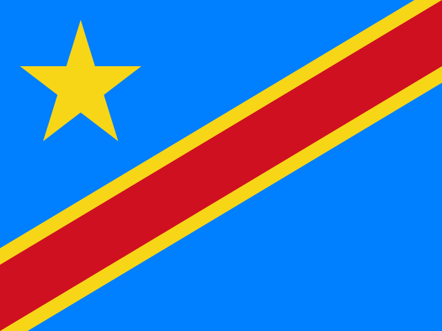
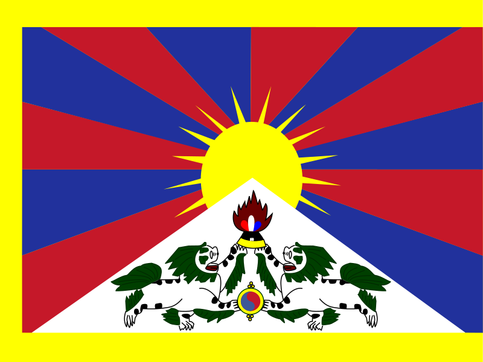
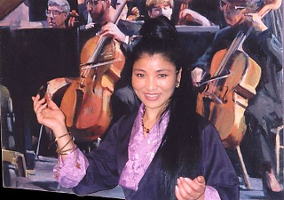
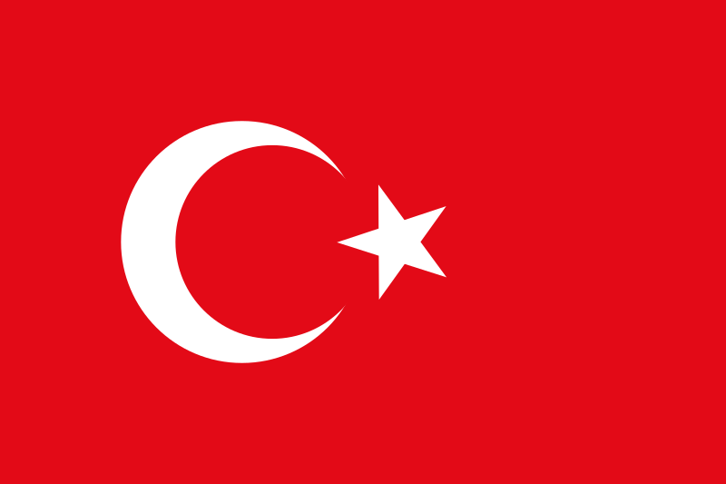
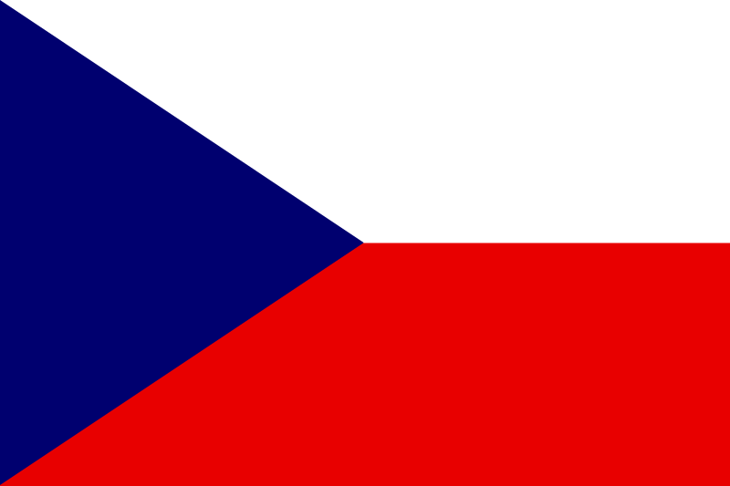
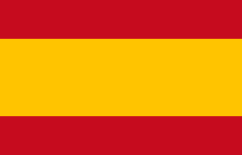
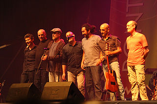
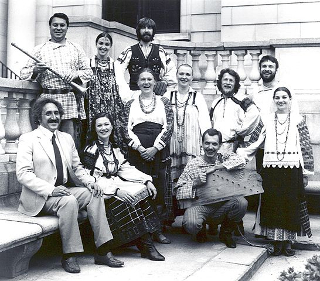
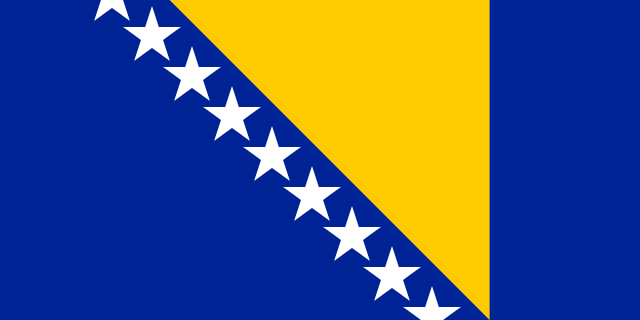
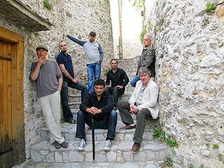

Ricardo Lemvo aus dem Kongo
Ricardo Lemvo:
Boom Boom Tarara
Album: São Salvador
Ricardo Lemvo ist im Kongo geboren und als Jugendlicher nach Los Angeles gezogen, wo er später Politikwissenschaften studierte. Er gründete die Band „Makina Loca“, mit der er auf der ganzen Welt unterwegs ist. In seiner Musik mischt er Elemente afrikanischer Musik u.a. mit Elementen aus dem kubanischen Salsa.
Yungchen Lhamo aus Tibet
Yungchen Lhamo:
Happiness is ...
Album: Coming Home
Yungchen Lhamo ist eine Musikerin aus Tibet, die sich sehr für die Rechte der tibetischen Frauen engagiert und mehrmals vor dem Dalai Lama aufgetreten ist. Yungchen Lhamo verließ Tibet und lebte zunächst in Australien, bevor sie in die USA nach New York zog.

Bildquelle: Flickr
Ebru Yaşar aus der Türkei
Ebru Yaşar: Seni Anan
Benim İçin Doğurmuş
Album: Seni Anan Benim İçin Doğurmuş
Ebru Yasar ist in Ankara in der Türkei geboren. Mitte der 90er Jahre veröffentlichte sie ihr Debütalbum und konnte mit ihren folgenden Alben große Erfolge in der Türkei feiern. Mit einer Mischung aus Volksmusik und Pop konnte sie dort regelmäßig hohe Platzierungen in den Charts erreichen.
Věra Bílá aus Tschechien
Věra Bílá:
Sako rati
Album: Rom-Pop
Vӗra Bílá ist eine Roma, die in ärmlichen Verhältnissen aufwuchs, aber schon in ihrer Kindheit das Singen liebte. In ihrer Heimat und in Frankreich war sie ein gefeierter Star und tourte zusammen mit ihrer Band „Kale“ durch die USA. Heute lebt sie bescheiden.
Berrogüetto aus Spanien
Berrogüetto:
Fusco
Album: Viaxe por Urticaria
Berrogüetto ist eine Band aus Galicien, die sich 2014 aufgelöst hat. Die Band mischte alte Instrumente und Spielweisen mit aktuellen Sounds.

Bildquelle: Wikimedia
Calic aus Italien
Calic:
Un Poeta
Album: Terres de mar
Die Mitglieder der Band Calic stammen aus Alghero, einer Stadt auf der italienischen Insel Sardinien, in der seit dem 14. Jahrhundert ein katalanischer Dialekt gesprochen wird. „Terres de mar“ ist das zweite Album der Band, mit dem sie auch außerhalb Sardiniens bekannt wurde. Mit alten Instrumenten und modernen Arrangements lebt die sardische Musiktradition in den Songs von Calic wieder auf.
Dmitri Pokrovsky Ensemble aus Russland
 Dmitri Pokrovsky Ensemble: Mosquito
Dmitri Pokrovsky Ensemble: Mosquito
Album: The Wild Field
Das Dmitri Pokrovsky Ensemble wurde in Moskau als experimentelle Musikfolklore-Gruppe gegründet, die erstmals alte russische Folklore mit moderner Musik verband. Dies beeinflusste das Ansehen von Musikfolklore in Russland positiv.

Bildquelle: Wikimedia
Mostar Sevdah Reunion aus Bosnien/Herzegowina
Mostar Sevdah Reunion:
Moj dilbere
Album: Mostar Sevdah Reunion
Was für Andalusien der Flamenco ist, ist der Sevdah für Bosnien. Das arabische Wort „Sevdah“ bedeutet so viel wie „Liebe“. Auch in dem Song „Moj dilbere“ („Mein Schatz“) dreht sich alles um die Liebe.

Bildquelle: Wikimedia